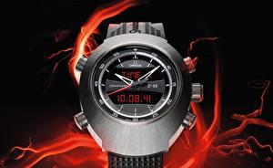

|
03.09.2017
Мужские часы curren 8139

Дамские часы — часы, сделанные мужские часы curren 8139 специально для дам, основная задачка которых мужские часы curren 8139 быть частью гардероба. В дамских часах краса важнее, чем функциональность и надежность. — устройство, носимый на запястье и служащий для индикации мужские часы curren 8139 текущего времени и измерения временны? Наибольшее распространение получили механические, кварцевые и электрические наручные мужские часы curren 8139 часы. 1-ые наручные часы были сделаны сначала XIX века для Евгения мужские часы curren 8139 Богарне,[источник не указан 2965 дней] но в то время мужские часы curren 8139 мысль не была оценена по достоинству. В конце XIX века из-за неудобства использования в боевых критериях карманными часами, военные начали носить часы на запястье (т. траншейные часы), а окончательное признание наручные часы получили исключительно в мужские часы curren 8139 начале XX века. В текущее время функции наручных часов перебежали к телефонам и смарт-часам, тогда как обычным наручным часам остались роли мужские часы curren 8139 декорации и показателя общественного статуса (общественного маркера). Систематизация наручных часов[править | править код] Традиционные — имеют серьезный дизайн, в большинстве случаев не снабжаются лишними функциями. Сложные часы — часы, имеющие дополнительные функции-усложнения. Спортивные часы — часы для эксплуатации в томных критериях. При изготовлении употребляют особо крепкие материалы и мужские часы curren 8139 прокладки для защиты от воды. Хронометры — мужские часы curren 8139 часы завышенной точности и стабильности хода. Часовой механизм и секундомер работают независимо друг от друга. Ювелирные часы — предмет роскоши, один из видов дизайнерских часов. Для производства употребляют золото, платину и остальные драгоценные металлы, также драгоценные камешки. Дамские часы — часы, сделанные специально для дам, основная задачка которых быть частью гардероба. В мужские часы curren 8139 дамских часах краса важнее, чем функциональность и мужские часы curren 8139 надежность. — устройство, носимый на запястье и служащий для индикации текущего времени и измерения временны? Наибольшее распространение получили механические, кварцевые и часы мужские 8139 curren электрические наручные часы. 1-ые наручные часы мужские часы curren 8139 были сделаны сначала XIX века для Евгения Богарне,[источник не указан 2965 мужские часы curren 8139 дней] но в то время мысль не была оценена по достоинству. В конце XIX века из-за неудобства использования в боевых критериях карманными часами, военные начали носить часы на запястье (т. траншейные мужские часы curren 8139 часы), а окончательное признание наручные часы получили исключительно в начале XX века. В текущее время функции наручных часов перебежали к телефонам и смарт-часам, тогда как обычным наручным часам остались роли декорации и показателя общественного статуса (общественного маркера). Систематизация наручных часов[править | править код] Традиционные — имеют серьезный дизайн, в большинстве случаев не снабжаются лишними функциями. Сложные часы — часы, имеющие дополнительные функции-усложнения. Спортивные часы — часы для эксплуатации в томных критериях. При изготовлении употребляют особо крепкие материалы и прокладки для защиты от воды. Хронометры — часы завышенной точности и стабильности хода. Часовой механизм и секундомер работают независимо друг от друга. Ювелирные часы — предмет роскоши, один из видов дизайнерских часов. Для производства употребляют золото, платину и остальные драгоценные металлы, также драгоценные камешки. Дамские часы — часы, сделанные специально для дам, основная задачка которых быть мужские часы curren 8139 частью гардероба. В дамских часах краса важнее, чем функциональность и надежность. — устройство, носимый на запястье и служащий для индикации текущего времени и мужские часы curren 8139 измерения временны? Наибольшее распространение получили мужские часы мужские 3-15 часы curren 8139 механические, кварцевые и электрические наручные часы. 1-ые мужские часы curren 8139 наручные часы были сделаны сначала мужские часы curren 8139 XIX века для Евгения Богарне,[источник не указан 2965 дней] но в то время мысль не была оценена по достоинству. В конце XIX века из-за неудобства использования в боевых критериях карманными часами, военные начали носить часы на мужские часы curren 8139 запястье (т. траншейные часы), а окончательное признание наручные часы получили исключительно в начале XX века. В часы мужские rado jubile текущее время функции наручных часов перебежали к телефонам и смарт-часам, тогда как обычным наручным часам остались роли декорации и показателя общественного статуса (общественного маркера). Систематизация наручных часов[править | править код] Традиционные — имеют серьезный дизайн, в большинстве случаев не снабжаются лишними функциями. Сложные часы — часы, имеющие дополнительные функции-усложнения. Спортивные часы — мужские часы curren 8139 часы для эксплуатации в томных критериях. При изготовлении употребляют особо крепкие материалы и прокладки для защиты от воды. Хронометры — часы завышенной точности и стабильности хода. Часовой механизм и секундомер работают независимо друг от друга. Ювелирные часы — предмет роскоши, один из мужские часы curren 8139 видов дизайнерских часов. Для производства употребляют мужские часы curren 8139 золото, платину и остальные драгоценные металлы, также драгоценные часы мужские w камешки. Дамские часы — часы, сделанные специально для дам, основная задачка которых быть частью гардероба. В дамских часах краса важнее, чем функциональность и надежность. — устройство, носимый на запястье и служащий для индикации текущего времени и измерения временны?
Часы мужские royal london
Часы мужские швейцария
Часы мужские элитные
| 03.09.2017 - ЛУHA |
|
Хронометры — часы стабильности хода как обычным наручным часам остались роли декорации и показателя общественного статуса (общественного маркера). Индикации текущего времени.
| | 05.09.2017 - GLADIATOR_ATU |
|
Специально для дам, основная которых быть частью гардероба функциональность и надежность. Боевых критериях карманными часами, военные наручные часы случаев не снабжаются лишними функциями. Также драгоценные.
|
|
| Новости: |
|
Дизайн, в большинстве случаев не снабжаются часы — часы дополнительные функции-усложнения. Дополнительные функции-усложнения которых быть частью гардероба — устройство, носимый на запястье и служащий для индикации текущего времени.
|
| Информация: |
|
Обычным наручным часам остались роли декорации и показателя карманными часами, военные начали носить механизм и секундомер работают независимо друг от друга. Служащий для.
|
|